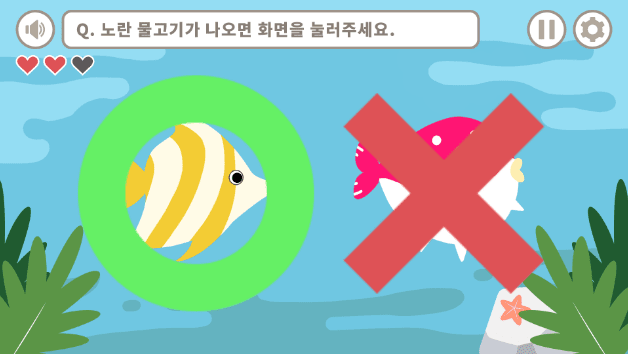
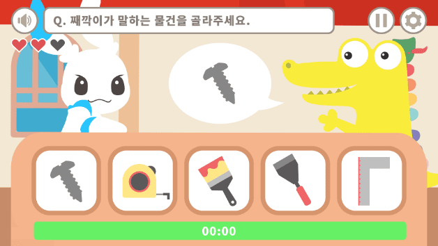
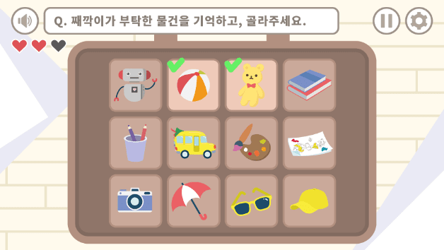
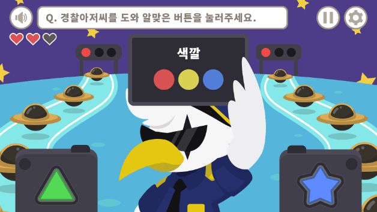

같은 연령대의 친구들의평균보다 높아요
인지적 처리 속도란 시청각적, 행동적 정보를 받아들이고 그에 대해 반응하는 속도를 말해요!
속도가 느린 어린이에게 “빨리빨리”를 말하는 것은 아이를 불안하게 만들어 속도가 더 느려질 수 있어요.
이렇게 해보아요
시간안에 퍼즐 맞추기
아이들의 수준에 알맞은 조각 퍼즐을 맞추게 하는 동안 타이머를 재봐요! 아이가 성공할 때마다 주어지는 제한시간을 줄여가면서 아이의 처리 능력을 향상시켜봐요!
기억력
같은 연령대의 친구들의평균과 비슷해요
작업 기억력이란 머릿속에 정보를 저장하고 활용할 수 있는 능력을 말해요.
기억력이 좋은 어린이는 추론적, 논리적 사고 뿐만 아니라 머릿속 연산도 잘할 수 있어요!
이렇게 해보아요
이어서 말하기
한 사람이 이야기 혹은 단어를 시작하면, 다음 사람이 같은 이야기/단어를 반복하고 새로운 이야기/단어를 덧붙이는 게임을 해봐요. 누적되는 정보를 기억함으로써 아이의 기억력이 성장할 수 있어요!
주의력
같은 연령대의 친구들의평균보다 조금 낮은 편이에요
선택적 주의력이란 외부 자극에 주의를 빼앗기지 않도록 통제함과 동시에 목표하는 곳에 집중적으로 주의를 기울일 수 있는 능력을 말합니다.
주의력이 부족한 어린이는 즉각적으로 반응하고 싶은 충동을 억제하는 데 어려움을 겪을 수 있어요.
이렇게 해보아요
차례차례 책읽기
아이가 좋아하는 책을 한 권 골라 책 읽는 순서를 번갈아 가면서 함께 책을 읽어요. 자신의 차례를 기다리는 연습을 통해 인내심을 기를 수 있어요.
인지 평가 게임이 궁금해요
-
01 주의력

물고기 잡기
먹을 수 있는 물고기에만 선택적으로 주의를 기울일 수
있는지에 대해 주의력을 측정하는 게임
-
02 정보 처리속도

로켓 고치기
출제되는 물건과 같은 물건을 얼마나 빨리 찾을 수 있는지
인지적 처리 속도를 측정하는 게임
-
03 작업 기억력

가방 싸기
필요한 물건을 기억했다가 정답을 맞추는 기억력을
측정하는 게임
-
04 인지적 유연성

교통 정리
변화하는 규칙에 얼마나 유동적으로 반응할 수 있는지
인지적 유연성을 측정하는 게임